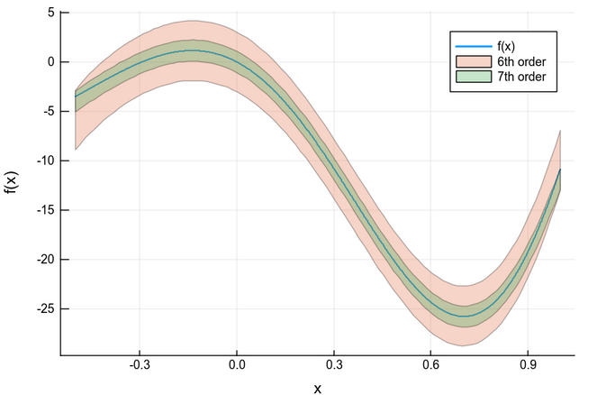

TaylorModels.jl
This package combines the IntervalArithmetic.jl and TaylorSeries.jl packages to provide Taylor models, i.e. Taylor polynomials with guaranteed error bounds to approximate functions.
An introduction is available in this video from JuliaCon 2018.
Introduction to Taylor Models
Taylor models provide a way to rigorously manipulate and evaluate functions using floating-point arithmetic. They have been widely used for validated computing: in global optimization and range bounding, for validated solutions of ODEs, rigorous quadrature, etc.
A Taylor model (TM) of order $n$ for a function $f$ which is supposed to be $n + 1$ times continuously differentiable over an interval $[a,b]$, is a rigorous polynomial approximation of $f$. Specifically, it is a couple $(P, \Delta)$ formed by a polynomial $P$ of degree $n$, and an interval part $\Delta$, such that $f(x) − P(x) \in \Delta$, $\forall x ∈ [a,b]$. Roughly speaking, as their name suggests, the polynomial can be seen as a Taylor expansion of the function at a given point. The interval $\Delta$ (also called interval remainder) provides the validation of the approximation, meaning that it provides an enclosure of all the approximation errors encountered (truncation, roundings).
Here we generate TMs of order 6 and 7 over $I = [-0.5,1.0]$. We can view a TM as a a tube around the actual function.
using TaylorModels
f(x) = x*(x-1.1)*(x+2)*(x+2.2)*(x+2.5)*(x+3)*sin(1.7*x+0.5)
a = -0.5 .. 1.0 # Domain
x0 = mid(a) # Expansion point
tm6 = TaylorModel1(6, interval(x0), a) # Independent variable for Taylor models, order 6
tm7 = TaylorModel1(7, interval(x0), a) # Independent variable for Taylor models, order 7
# Taylor models corresponding to f(x) of order 6 and 7
ftm6 = f(tm6)
ftm7 = f(tm7)
# Now the plot
using Plots; gr()
plot(range(inf(a), stop=sup(a), length=1000), x->f(x), label="f(x)", lw=2, xaxis="x", yaxis="f(x)")
plot!(ftm6, label="6th order")
plot!(ftm7, label="7th order")
Authors
- Luis Benet, Instituto de Ciencias Físicas, Universidad Nacional Autónoma de México (UNAM)
- David P. Sanders, Departamento de Física, Facultad de Ciencias, Universidad Nacional Autónoma de México (UNAM)
Bibliography
- Rigorous Polynomial Approximations and Applications, Mioara Maria Joldes, Ecole normale supérieure de lyon - ENS LYON (2011)
Acknowledgements
Financial support is acknowledged from DGAPA-UNAM PAPIIT grants IN-117117, IG-100616 and IG-100819. DPS acknowledges support through a Cátedra Marcos Moshinsky (2018).